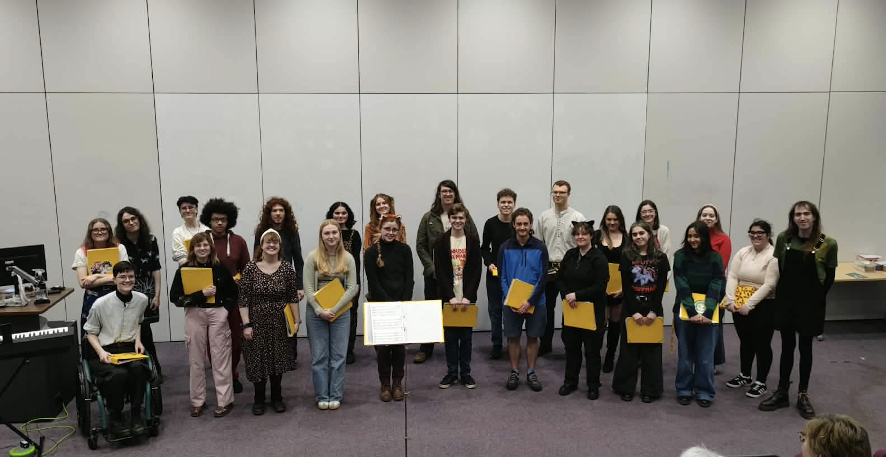

The Sing Song Soc Spring 2026 concert took place in ATB/056, at 4pm, on Sunday 8th March.
It was titled 'A Musical Menagerie' and included animal-themed songs and a solo showcase.

Music Directors: Lily Penny
Assistant Music Directors: Izzie Wraith-Haycock, Chris Jacobs, EJ Nyren, Anna Harvey
Accompanists: Lily Penny, Chris Jacobs
Soprano
Anna Harvey
Charlotte Johnson
Evelyn Youngman
Meg Johnston
Kat Lea-Wilson
Alto
Amy Sargent
Tabitha Milne
EJ Nyren
Eleanor Crampton
Abi Powers
Emily Burke
Sabine Bathe-Taylor
Felicity Francis
Georgina Bonada Sanchez
Tenor
Charlie Butler
Grace Hill
Katie Winrow
Finn Lay
Izzie Wraith-Haycock
Fergus Foster
Joshua Jackson
Bass
Toby Knight
Chris Jacobs
Sam Gates
Jed Hampshire-Wright
Lily Penny
Ben Fisher
Ah Robin, Gentle Robin - William Cornysh
Adapted & Conducted by Lily Penny
Hungry Like The Wolf - Duran Duran
Arranged & Conducted by Lily Penny
The Last Man on Earth - Wolf Alice
Solo by Grace Hill
Tick - They Might Be Giants
Duet by Charlie Butler & Lily Penny
Fish In A Birdcage - Fish In A Bird Cage
Solo by Izzie Wraith-Haycock
El Grillo - Josquin des Prez
Group by Charlotte Johnson, Abi Powers, Finn Lay, Lily Penny
Spooky Scary Skeletons - Andrew Gold, arr. John Sturt
Conducted by Lily Penny
Interval
Chicken on a Raft - Cyril Tawney, arr. Jake Alexander
Conducted by Lily Penny
Horse with No Name - America
Group by Committee
Borontosaurus - They Might Be Giants
Solo by Lily Penny
Feed the Birds (Tuppence a Bag) - Mary Poppins
Solo by Anna Harvey
What's New, Scooby Doo? - Simple Plan - arr. Andrew Wittenburg
Adapted by Izzie Wraith-Haycock
Group by Grace Hill, Izzie Wraith-Haycock, Charlie Butler,
Katie Winrow, Jed Hampshire-Wright, Toby Knight, Sam Gates
Clay Pigeons - Blaze Foley
Solo by Meg Johnston
Stayin' Alive - Bee Gees
Arranged & Conducted by Lily Penny
This work is licensed under CC BY-SA 4.0